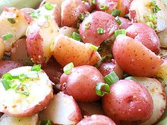

1-2-3 Potato Salad

Photo: startcooking kathy & amandine (CC BY 2.0)
A simple three-ingredient potato salad of red or new potatoes cooked with a bouillon cube, then tossed with mayonnaise.
Directions
- In 4 quart saucepot, cover potatoes and bouillon cube with water. Bring to a boil over high heat. Reduce heat and cook uncovered 10 minutes or until potatoes are tender. Drain. Do not rinse. Let cool slightly.
- In large bowl, combine cooled potatoes with mayonnaise. Chill, if desired, before serving. Garnish with parsley and black pepper.
- In a 4-quart saucepot, cover the potatoes and bouillon cube with water. Bring to a boil over high heat.
- Reduce heat and cook uncovered 10 minutes, or until the potatoes are tender. Drain, but do not rinse. Let cool slightly.
- In a large bowl, combine the cooled potatoes with the mayonnaise.
- Chill, if desired, before serving. Garnish with parsley and black pepper.
Goes well with
https://lizotte.cool/recipe/1-2-3-potato-salad.html